Catalogue
Neiwa Interactive has released six soundtracks since 2020, and a seventh is on the way. Jose Pavli composed all of the music.
-
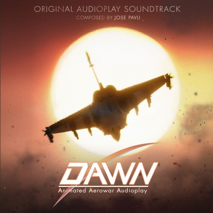
Dawn Aerowar
Original soundtrack of the film
202634 tracks, 77 minReleased with the film -
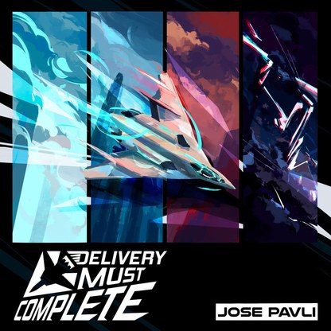
Delivery Must Complete
Original soundtrack, single
20261 track, 3 min -
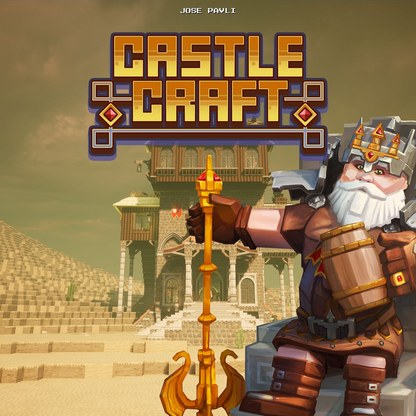
Castle Craft
Original soundtrack
202516 tracks, 32 min -
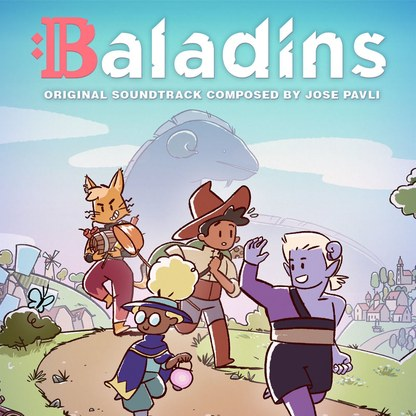
Baladins
Original soundtrack
202416 tracks, 21 min -
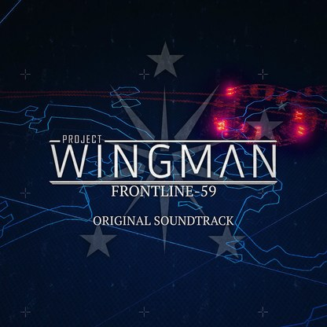
Project Wingman: Frontline 59
Original soundtrack
202318 tracks, 49 min -
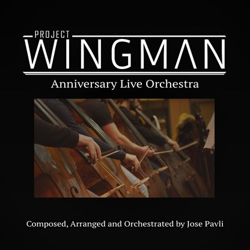
Project Wingman: Anniversary Live Orchestra
Live recording with the London Pops Orchestra. About the recording
20223 tracks, 21 min -
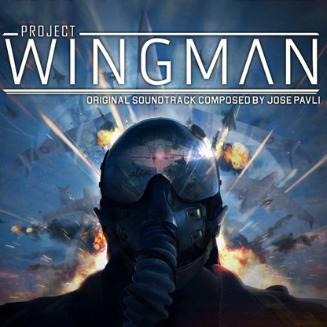
Project Wingman
Original soundtrack
202040 tracks, 115 min
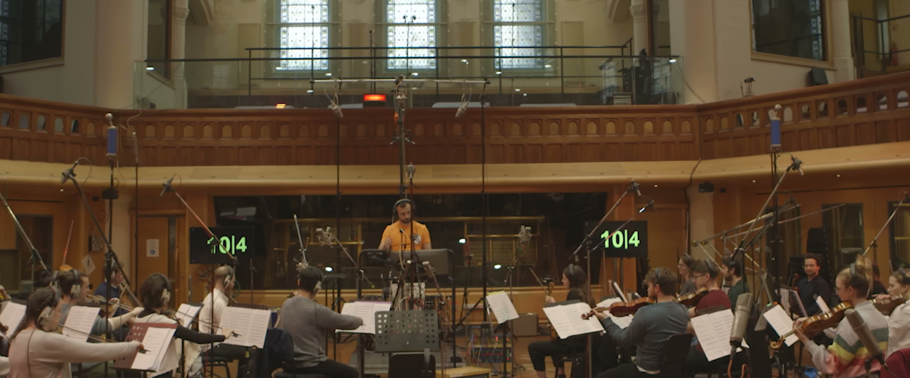
Project Wingman: Anniversary Live Orchestra
For the first anniversary of Project Wingman, Neiwa Interactive and Sector D2 co-produced a live recording of the score. The London Pops Orchestra, a choir and six soloists played three pieces at AIR Studios in London: Peacekeeper II, Kings, and the One Year Anniversary Medley.
- Produced by
- Neiwa Interactive
Sector D2 - Composed, arranged, orchestrated and conducted by
- Jose Pavli
- Performed by
- London Pops Orchestra
- Orchestra director
- Quentin Poole
- Orchestra contractor
- Guy Button
- Recorded at
- AIR Studios, London
- Recording engineer
- Jeremy Murphy
- Mixed and mastered by
- Christian Gazczuck
Jose Pavli
- Solo violin
- Eloisa-Fleur Thom
- Solo viola
- Tetsuumi Nagata
- Solo cello
- Jonny Byers
- Solo soprano
- Lucy Knight
- Solo trumpet
- Mike Lovatt
- Duduk, Turkish clarinet
- Martin Robertson
- Score editing
- Filip Sijanec
- Score preparation
- Thibault Chavanis
- Session film
- Ronnie McQuillan
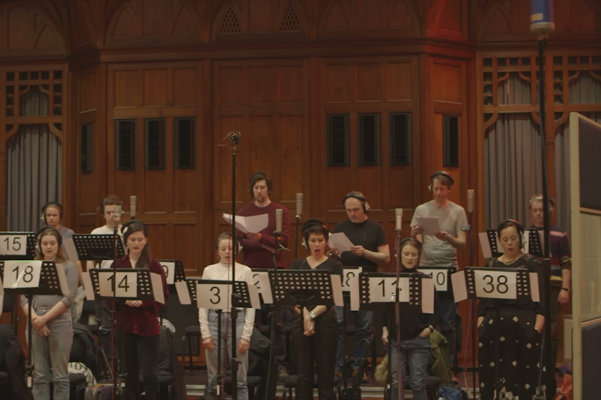
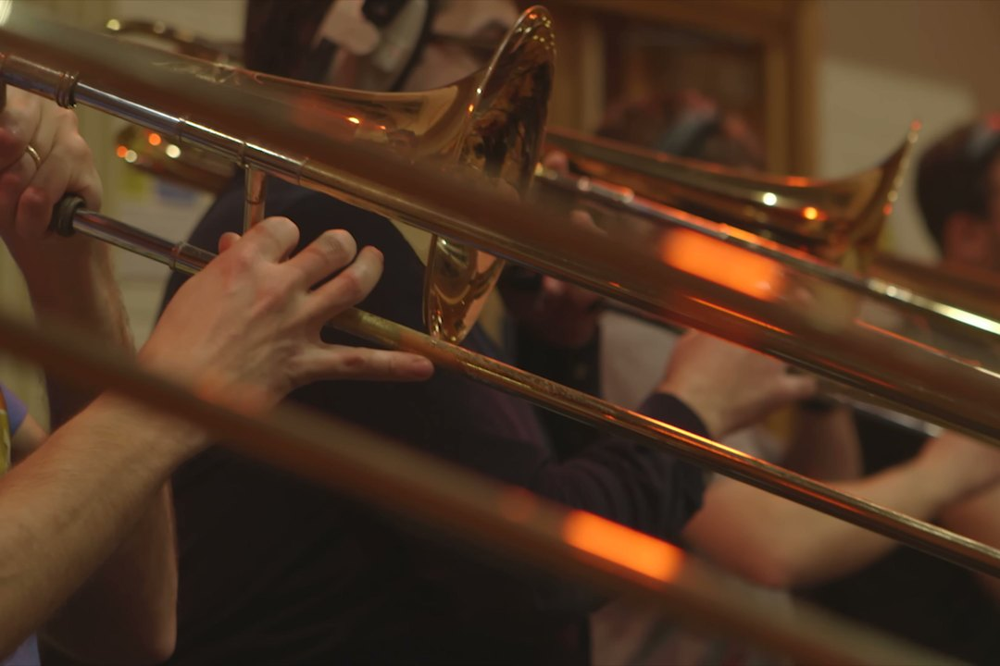
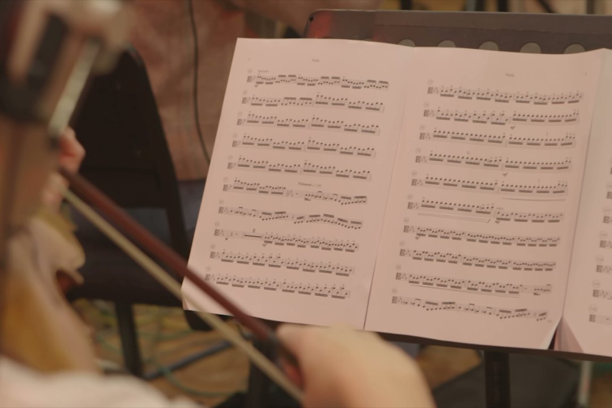
These stills come from the session film shot at AIR Studios, London.
Contact
General
contact@neiwainteractive.comPress and creators
press@neiwainteractive.comLicensing and business
business@neiwainteractive.comRegistered office
4 Square Gabriel Péri
13110 Port-de-Bouc, France